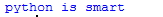

chapter.04 - 변수
수학에서 변수는 '쓰이는 수식에 따라 변하는 값'을 변수라한다.
하지만 프로그래밍에서의 변수는 의미가 다릅니다. 변수는 데이터를
보관하는 장소라고 생각하면 된다. 예를 들어 계산을 한 값이 어느
한 곳에서만 쓰이지 않고 여러곳에서 쓰인다면 그 값을 어느 한 곳에
저장을 하면 매번 계산을 되풀이 하지 않고 사용이 가능하다.
간단한 예제를 살펴보자.
#예제4.1
a=1+1
->여기서 a가 변수이다. 주의할 점은 위의 예제의 '='는 우리가 사용하는
'같다'의 의미가 아닙니다.
프로그래밍에서 '='는 '오른쪽값(데이터)를 컴퓨터의 메모리(RAM)에
저장하고 왼쪽항에 적인 이름을 붙여라'라는 뜻이다.
즉,'1+1의 값을 저장해서 a라고 부르겠다'라고 해석하면 된다.
#예제4.2
a=6
b=10
a=a+1
result=a+b
print(result)
위의 예제의 값을 생각해보자. 모두 다 생각했다고 생각하고 답을 공개하겠다.
->모두 다 생각한 대로 답이 나왔는 가? 비유를 통해 해석 해보면
일단, a라는 그릇에는 6개의 공, b라는 그릇에는 10개의 공이 있다.
a그릇에 한개의 공을 추가해 7개가 되었다.
result 그릇에는 a그릇,b그릇에 있는 공을 더하는 것이다.
결국 resul 그릇에는 17개가 있다. 그것을 보여줘라~
이 정도로 해석을 하면 될 것 이다.
(2)변수의 이름
변수를 만드는 데는 지켜야할 규칙이 있다.
1.영어와 숫자와 under bar(_)의 조합으로만 만들어져야한다.
2.첫 글자는 숫자를 사용할 수 없습니다.
3.변수는 대문자와 소문자를 구분합니다.
4.기존에 존재하는 명령어(키워드)로는 사용할 수 없습니다.
#예제4.3
다음의 변수선언 중 틀린것을 찾으시오
*1. Rabbit = 10
*2. 33Dog = 33
*3. if = 10
*4. Cat_1 = 10
위의 규칙을 잘 생각해보면 금방 답을 찾을 수 있을 것이다.
정답은 (2),(3)이다. 2번은 첫글자에 숫자가 쓰였고, 3번은 기존에 존재하는 명령어이다.
혹시 C언어를 배우고 파이썬을 공부하시는 분이 있으신가?
파이썬과 C언어는 변수선언이 다른 것을 알 수 있다. 파이썬에서는 변수에 값을 대입하는<
즉시 파이썬에서 데이터의 형태를 알아서 파악합니다.
따라서 파이썬에서는 변수의 데이터타입을 자유롭게 변화시킬 수 있습니다.
#예제4.4
a=1
a="python is smart"
print(a)

또 다른 차이점은 파이썬의 문장의 끝에는 ;를 찍어주지 않는다.